File: 000030.gt.txt (if the image is defective, simply delete all Arabic text and the line will be excluded)
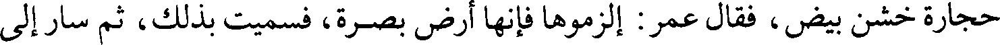
حجارة خشن بيض، فقال عمر: الزموها فإنها أرض بصرة، فسميت بذلك، ثم سار إلى
File: 000031.gt.txt (if the image is defective, simply delete all Arabic text and the line will be excluded)
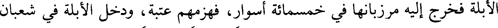
الأبلة فخرج إليه مرزبانها في خمسمائة أسوار، فهزمهم عتبة، ودخل الأبلة في شعبان
File: 000032.gt.txt (if the image is defective, simply delete all Arabic text and the line will be excluded)
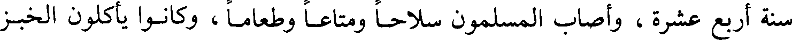
سنة أربع عشرة، وأصاب المسلمون سلاحا ومتاعا وطعاما، وكانوا يأكلون الخبز
File: 000033.gt.txt (if the image is defective, simply delete all Arabic text and the line will be excluded)
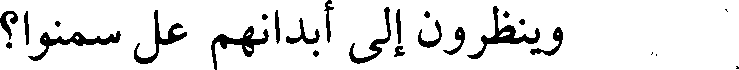
وينظرون إلى أبدانهم عل سمنوا؟
File: 000034.gt.txt (if the image is defective, simply delete all Arabic text and the line will be excluded)
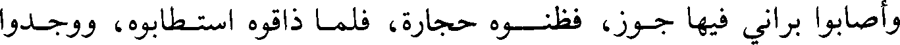
وأصابوا براني فيها جوز، فظنوه حجارة، فلما ذاقوه استطابوه، ووجدوا
File: 000035.gt.txt (if the image is defective, simply delete all Arabic text and the line will be excluded)
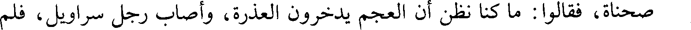
صحناة، فقالوا: ما كنا نظن أن العجم يدخرون العذرة، وأصاب رجل سراويل، فلم
File: 000036.gt.txt (if the image is defective, simply delete all Arabic text and the line will be excluded)
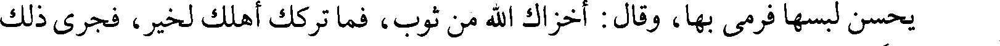
يحسن لبسها فرمى بها، وقال: أخزاك الله من ثوب، فما تركك أهلك لخير، فجرى ذلك
File: 000037.gt.txt (if the image is defective, simply delete all Arabic text and the line will be excluded)
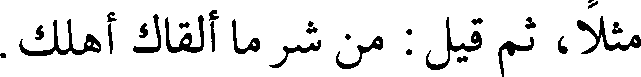
مثلا، ثم قيل: من شر ما ألقاك أهلك.
File: 000038.gt.txt (if the image is defective, simply delete all Arabic text and the line will be excluded)
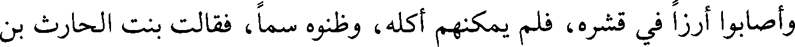
وأصابوا أرزا في قشره، فلم يمكنهم أكله، وظنوه سما، فقالت بنت الحارث بن
File: 000039.gt.txt (if the image is defective, simply delete all Arabic text and the line will be excluded)
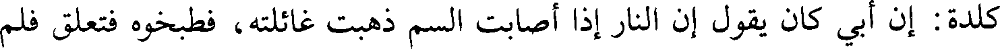
كلدة: إن أبي كان يقول إن النار إذا أصابت السم ذهبت غائلته، فطبخوه فتعلق فلم
File: 000040.gt.txt (if the image is defective, simply delete all Arabic text and the line will be excluded)
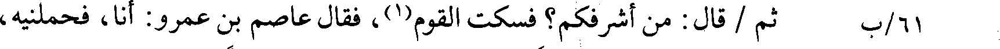
٦١/ب ثم / قال: من أشرفكم؟ فسكت القوم (1) ، فقال عاصم بن عمرو: أنا، فحملنيه،
File: 000041.gt.txt (if the image is defective, simply delete all Arabic text and the line will be excluded)
فحمله على عنقه، فأتى به سعدا، فقال: ملكنا الله أرضهم تفاؤلا بأخذ التراب.
File: 000042.gt.txt (if the image is defective, simply delete all Arabic text and the line will be excluded)
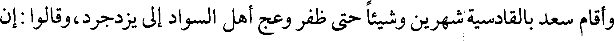
وأقام سعد بالقادسية شهرين وشيئا حتى ظفر وعج أهل السواد إلى يزدجرد، وقالوا: إن
File: 000043.gt.txt (if the image is defective, simply delete all Arabic text and the line will be excluded)
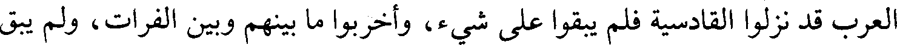
العرب قد نزلوا القادسية فلم يبقوا على شيء، وأخبروا ما بينهم وبين الفرات، ولم يبق
File: 000044.gt.txt (if the image is defective, simply delete all Arabic text and the line will be excluded)
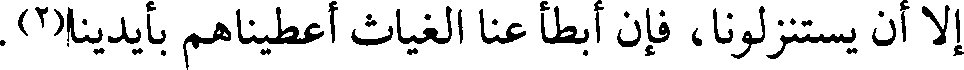
إلا أن يستنزلونا، فإن أبطأ عنا الغياث أعطيناهم بأيدينا(٢).
File: 000045.gt.txt (if the image is defective, simply delete all Arabic text and the line will be excluded)
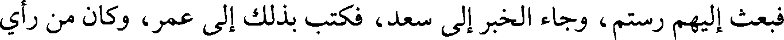
فبعث إليهم رستم، وجاء الخبر إلى سعد، فكتب بذلك إلى عمر، وكان من رأي
File: 000046.gt.txt (if the image is defective, simply delete all Arabic text and the line will be excluded)
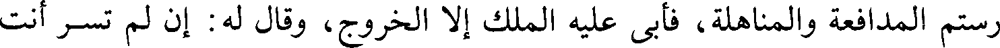
رستم المدافعة والمناهلة، فأبى عليه الملك إلا الخروج، وقال له: إن لم تسر أنت
File: 000047.gt.txt (if the image is defective, simply delete all Arabic text and the line will be excluded)
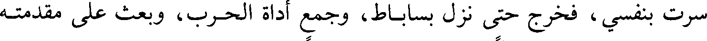
سرت بنفسي، فخرج حتى نزل بساباط، وجمع أداة الحرب، وبعث على مقدمته
File: 000048.gt.txt (if the image is defective, simply delete all Arabic text and the line will be excluded)
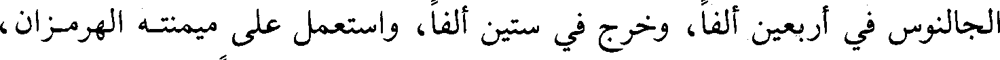
الجالنوس في أربعين ألفا، وخرج في ستين ألفا، واستعمل على ميمنته الهرمزان،
File: 000049.gt.txt (if the image is defective, simply delete all Arabic text and the line will be excluded)
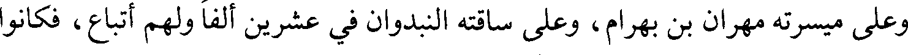
وعلى ميسرته مهران بن بهرام، وعلى ساقته النبدوان في عشرين ألفا ولهم أتباع، فكانوا
File: 000050.gt.txt (if the image is defective, simply delete all Arabic text and the line will be excluded)
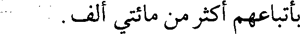
بأتباعهم أكثر من مائتي ألف.
File: 000051.gt.txt (if the image is defective, simply delete all Arabic text and the line will be excluded)
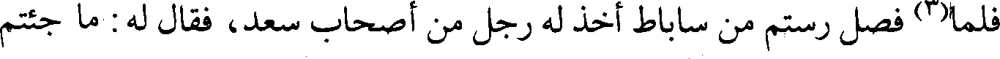
فلما(٣) فصل رستم من ساباط أخذ له رجل من أصحاب سعد، فقال له: ما جئتم
File: 000052.gt.txt (if the image is defective, simply delete all Arabic text and the line will be excluded)
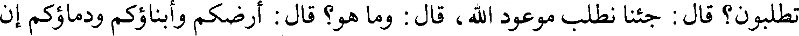
تطلبون؟ قال: جئنا نطلب موعود الله، قال: وما هو؟ قال: أرضكم وأبناؤكم ودماؤكم إن
File: 000053.gt.txt (if the image is defective, simply delete all Arabic text and the line will be excluded)
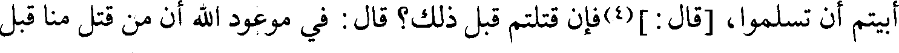
أبيتم أن تسلموا، [قال:](4) فإن قتلتم قبل ذلك؟ قال: في موعود الله أن من قتل منا قبل
File: 000054.gt.txt (if the image is defective, simply delete all Arabic text and the line will be excluded)
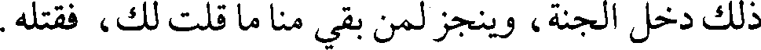
ذلك دخل الجنة، وينجز لمن بقي منا ما قلت لك، فقتله.
File: 000055.gt.txt (if the image is defective, simply delete all Arabic text and the line will be excluded)
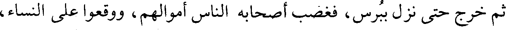
ثم خرج حتى نزل ببرس، فغضب أصحابه الناس أموالهم، ووقعوا على النساء،
File: 000056.gt.txt (if the image is defective, simply delete all Arabic text and the line will be excluded)
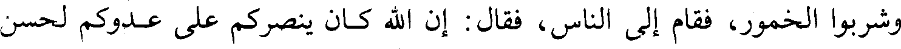
وشربوا الخمور، فقام إلى الناس، فقال: إن الله كان ينصركم على عدوكم لحسن
File: 000057.gt.txt (if the image is defective, simply delete all Arabic text and the line will be excluded)
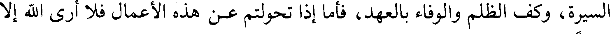
السيرة، وكف الظلم والوفاء بالعهد، فأما إذا تحولتم عن هذه الأعمال فلا أرى الله إلا
File: 000058.gt.txt (if the image is defective, simply delete all Arabic text and the line will be excluded)
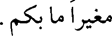
مغيرا ما بكم.
File: 000059.gt.txt (if the image is defective, simply delete all Arabic text and the line will be excluded)
To Save: `Ctrl+s`, make sure to choose `Webpage, complete`!